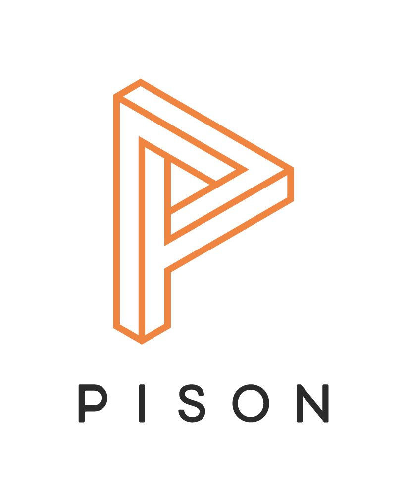

Pison Co - Op
Developed infrastructure for the Pison controller to interact with computers and other devices.
Created software demos for Android, HoloLens, Android based augmented reality headsets, Windows.
Demos were all controlled by the Pison device and presented to potential investors
Collected EMG data from ALS patients via the Pison controller, patients were able to navigate UIs using the controller
